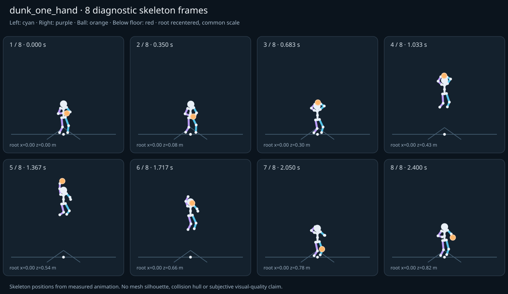

מה הוריד את הציון
- קפיצות פוזה: RightHand בזמן 1.4167 ש׳; קפיצת סיבוב שקולה 27.7462 מעלות ב־60Hz (צהוב)
- כניסה ויציאה מול המתנה: פער ב־כניסה מול המתנה; יחס חריגה 1.9078 (צהוב)
כיסוי: 100%. לא כל מדד חל על כל קליפ; הסטטוס והראיות מפורטים למטה.
שמונה פריימים
תצוגת שלד אבחונית שנבנתה מהפריימים הנמדדים. צד שמאל בכחול, ימין בסגול, כדור בכתום. מיקום השורש ממורכז לצפייה; מיקומו בעולם כתוב בכל פריים.

המדדים והראיות
| מדד | מצב | ערך | ציון | סף ופרטי מדידה |
|---|---|---|---|---|
| החלקת רגליים | ירוק | 0.001 height ratio | 99 | {
"definition": {
"label": "החלקת רגליים",
"unit": "height ratio",
"green": 0.01,
"yellow": 0.035,
"weight": 18,
"description": "Maximum horizontal sole displacement from the first sample of each declared support window, divided by character height. Inferred support is used only when no windows were supplied."
},
"value": 0.000598,
"status": "green",
"score": 98.8,
"evidence": {
"coordinateSpace": "authored reference world (simulation-owned)",
"supportSource": "declared",
"windows": 6,
"samples": 120,
"maxDriftMeters": 0.00101,
"p95SpeedMetersPerSecond": 0.028626,
"worst": {
"bone": "LeftFoot",
"t": 0.716667,
"start": 0.456,
"end": 0.8,
"driftMeters": 0.00101
}
}
} |
| חדירה לרצפה | ירוק | 0.001 height ratio | 98 | {
"definition": {
"label": "חדירה לרצפה",
"unit": "height ratio",
"green": 0.005,
"yellow": 0.02,
"weight": 15,
"description": "Maximum depth of the supplied sole probe points and all skeletal joint centers below the declared floor plane, divided by height. Sole probes are not a mesh collision audit."
},
"value": 0.000552,
"status": "green",
"score": 97.79,
"evidence": {
"samples": 3020,
"floorY": 0,
"probeKind": "declared sole probes plus skeletal joint centers (no mesh surfaces)",
"maxDepthMeters": 0.000932,
"worst": {
"t": 2.05,
"bone": "LeftFoot",
"depthMeters": 0.000932,
"y": -0.000932
}
}
} |
| קפיצות פוזה | צהוב | 1.85 discontinuity ratio | 63 | {
"definition": {
"label": "קפיצות פוזה",
"unit": "discontinuity ratio",
"green": 1,
"yellow": 2.5,
"weight": 18,
"description": "Maximum adjacent 60 Hz-equivalent step: root-relative marker displacement / 0.04 height, root-relative rotation / 15 degrees, or root translation / 0.08 height. A fast continuous action can also exceed this screening threshold."
},
"value": 1.849746,
"status": "yellow",
"score": 63.01,
"evidence": {
"adjacentPairs": 150,
"observations": 2550,
"maxDegrees60Hz": 27.746197,
"maxMarkerStepHeight60Hz": 0.06179,
"maxRootStepHeight60Hz": 0.007181,
"worst": {
"ratio": 1.8497464509920276,
"t": 1.416667,
"previousTime": 1.4,
"bone": "RightHand",
"markerStepHeight60Hz": 0.023203,
"degrees60Hz": 27.746197
}
}
} |
| חריגות אנטומיות | ירוק | 0 % affected frames | 100 | {
"definition": {
"label": "חריגות אנטומיות",
"unit": "% affected frames",
"green": 0.5,
"yellow": 3,
"weight": 14,
"description": "Percentage of frames with elbow or knee flexion above 165 degrees, neck bend above 80 degrees, or a segment length changing by more than 5%. Optional calibrated hinge checks detect reverse knee flexion above 8 degrees. Conservative marker limits do not diagnose axial joint twist."
},
"value": 0,
"status": "green",
"score": 100,
"evidence": {
"testedFrames": 151,
"affectedFrames": 0,
"checks": 2567,
"maxLimbFlexionDegrees": 137.749408,
"maxRelativeSegmentLengthChange": 0,
"hingeDirectionChecked": true,
"axialTwistChecked": false,
"violations": []
}
} |
| מגע בכדור | ירוק | 0.002 height ratio | 97 | {
"definition": {
"label": "מגע בכדור",
"unit": "height ratio",
"green": 0.015,
"yellow": 0.05,
"weight": 13,
"description": "Maximum absolute distance from the ball surface to the sampled, bone-transformed declared contact point, divided by height. Events are evaluated at their exact declared times by interpolation."
},
"value": 0.00208,
"status": "green",
"score": 97.23,
"evidence": {
"radiusMeters": 0.12,
"samples": 161,
"missed": [],
"contacts": [
{
"t": 0.516667,
"bone": "RightHand",
"gapMeters": 0.003516,
"signedGapMeters": 0.003516,
"centerDistanceMeters": 0.123516,
"contactPoint": [
-0.178803,
1.230359,
0.447672
],
"ballCenter": [
-0.060157,
1.202193,
0.428027
],
"declaredLocalPoint": true
},
{
"t": 0.45,
"bone": "RightHand",
"gapMeters": 0.002916,
"signedGapMeters": 0.002916,
"centerDistanceMeters": 0.122916,
"contactPoint": [
-0.162908,
1.011816,
0.451799
],
"ballCenter": [
-0.046221,
0.979644,
0.430407
],
"declaredLocalPoint": true
},
{
"t": 1.15,
"bone": "RightHand",
"gapMeters": 0.002833,
"signedGapMeters": -0.002833,
"centerDistanceMeters": 0.117167,
"contactPoint": [
-0.235093,
3.1025,
0.620341
],
"ballCenter": [
-0.118693,
3.109679,
0.609045
],
"declaredLocalPoint": true
},
{
"t": 0.456,
"bone": "RightHand",
"gapMeters": 0.002636,
"signedGapMeters": 0.002636,
"centerDistanceMeters": 0.122636,
"contactPoint": [
-0.163852,
1.035106,
0.45108
],
"ballCenter": [
-0.047189,
1.003068,
0.431014
],
"declaredLocalPoint": true
},
{
"t": 0.483333,
"bone": "RightHand",
"gapMeters": 0.002505,
"signedGapMeters": 0.002505,
"centerDistanceMeters": 0.122505,
"contactPoint": [
-0.169485,
1.127064,
0.449538
],
"ballCenter": [
-0.052544,
1.095621,
0.431002
],
"declaredLocalPoint": true
},
{
"t": 0.55,
"bone": "RightHand",
"gapMeters": 0.002214,
"signedGapMeters": 0.002214,
"centerDistanceMeters": 0.122214,
"contactPoint": [
-0.185485,
1.335168,
0.444484
],
"ballCenter": [
-0.067741,
1.308378,
0.425646
],
"declaredLocalPoint": true
},
{
"t": 0.516667,
"bone": "LeftHand",
"gapMeters": 0.002204,
"signedGapMeters": 0.002204,
"centerDistanceMeters": 0.122204,
"contactPoint": [
0.056144,
1.202506,
0.465548
],
"ballCenter": [
-0.060157,
1.202193,
0.428027
],
"declaredLocalPoint": true
},
{
"t": 1.216667,
"bone": "RightHand",
"gapMeters": 0.00195,
"signedGapMeters": -0.00195,
"centerDistanceMeters": 0.11805,
"contactPoint": [
-0.233698,
3.241878,
0.60097
],
"ballCenter": [
-0.124654,
3.278764,
0.627134
],
"declaredLocalPoint": true
},
{
"t": 1.05,
"bone": "RightHand",
"gapMeters": 0.001367,
"signedGapMeters": 0.001367,
"centerDistanceMeters": 0.121367,
"contactPoint": [
-0.223423,
2.763051,
0.617087
],
"ballCenter": [
-0.106794,
2.755885,
0.584279
],
"declaredLocalPoint": true
},
{
"t": 0.583333,
"bone": "LeftHand",
"gapMeters": 0.001199,
"signedGapMeters": -0.001199,
"centerDistanceMeters": 0.118801,
"contactPoint": [
0.044589,
1.394937,
0.420582
],
"ballCenter": [
-0.073989,
1.395852,
0.427788
],
"declaredLocalPoint": true
},
{
"t": 0.55,
"bone": "LeftHand",
"gapMeters": 0.000992,
"signedGapMeters": 0.000992,
"centerDistanceMeters": 0.120992,
"contactPoint": [
0.051927,
1.309969,
0.443428
],
"ballCenter": [
-0.067741,
1.308378,
0.425646
],
"declaredLocalPoint": true
},
{
"t": 0.45,
"bone": "LeftHand",
"gapMeters": 0.000839,
"signedGapMeters": -0.000839,
"centerDistanceMeters": 0.119161,
"contactPoint": [
0.06815,
0.995616,
0.459794
],
"ballCenter": [
-0.046221,
0.979644,
0.430407
],
"declaredLocalPoint": true
},
{
"t": 0.583333,
"bone": "RightHand",
"gapMeters": 0.0008,
"signedGapMeters": 0.0008,
"centerDistanceMeters": 0.1208,
"contactPoint": [
-0.190647,
1.422718,
0.443973
],
"ballCenter": [
-0.073989,
1.395852,
0.427788
],
"declaredLocalPoint": true
},
{
"t": 1.116667,
"bone": "RightHand",
"gapMeters": 0.000739,
"signedGapMeters": 0.000739,
"centerDistanceMeters": 0.120739,
"contactPoint": [
-0.2314,
3.011647,
0.631832
],
"ballCenter": [
-0.115012,
3.004312,
0.600562
],
"declaredLocalPoint": true
},
{
"t": 0.716667,
"bone": "LeftHand",
"gapMeters": 0.000712,
"signedGapMeters": -0.000712,
"centerDistanceMeters": 0.119288,
"contactPoint": [
0.038663,
1.480853,
0.476575
],
"ballCenter": [
-0.080145,
1.481041,
0.487269
],
"declaredLocalPoint": true
},
{
"t": 0.456,
"bone": "LeftHand",
"gapMeters": 0.00069,
"signedGapMeters": -0.00069,
"centerDistanceMeters": 0.11931,
"contactPoint": [
0.06759,
1.013756,
0.461777
],
"ballCenter": [
-0.047189,
1.003068,
0.431014
],
"declaredLocalPoint": true
},
{
"t": 0.75,
"bone": "LeftHand",
"gapMeters": 0.000594,
"signedGapMeters": -0.000594,
"centerDistanceMeters": 0.119406,
"contactPoint": [
0.038299,
1.483958,
0.490026
],
"ballCenter": [
-0.080579,
1.484171,
0.501241
],
"declaredLocalPoint": true
},
{
"t": 0.616667,
"bone": "LeftHand",
"gapMeters": 0.000554,
"signedGapMeters": -0.000554,
"centerDistanceMeters": 0.119446,
"contactPoint": [
0.040959,
1.45195,
0.426093
],
"ballCenter": [
-0.078001,
1.452013,
0.436853
],
"declaredLocalPoint": true
},
{
"t": 1.383333,
"bone": "RightHand",
"gapMeters": 0.00054,
"signedGapMeters": -0.00054,
"centerDistanceMeters": 0.11946,
"contactPoint": [
-0.226935,
3.407575,
0.627036
],
"ballCenter": [
-0.129998,
3.460628,
0.672414
],
"declaredLocalPoint": true
},
{
"t": 0.816667,
"bone": "RightHand",
"gapMeters": 0.000459,
"signedGapMeters": 0.000459,
"centerDistanceMeters": 0.120459,
"contactPoint": [
-0.199011,
1.596528,
0.55494
],
"ballCenter": [
-0.082922,
1.590412,
0.523376
],
"declaredLocalPoint": true
}
],
"contactDetailsTruncated": true,
"coordinateSpace": "authored reference world (simulation-owned)"
}
} |
| כניסה ויציאה מול המתנה | צהוב | 1.908 continuity ratio | 66 | {
"definition": {
"label": "כניסה ויציאה מול המתנה",
"unit": "continuity ratio",
"green": 1,
"yellow": 3,
"weight": 10,
"description": "Worst entry/exit mismatch to the best matching idle phase: RMS marker error / 0.04 height, RMS bone rotation / 25 degrees, or RMS endpoint velocity error / 0.75 height per second. Horizontal root translation is aligned; root height and body pose remain measurable."
},
"value": 1.907793,
"status": "yellow",
"score": 66.38,
"evidence": {
"entry": {
"ratio": 1.907793090699023,
"t": 0,
"idleTime": 2.133333,
"markers": 17,
"rmsPositionHeight": 0.062287,
"rmsRotationDegrees": 47.694827,
"rmsVelocityHeightPerSecond": 0.031765,
"velocityEvaluated": true
},
"exit": {
"ratio": 1.8939832305920006,
"t": 2.4,
"idleTime": 2.1,
"markers": 17,
"rmsPositionHeight": 0.054223,
"rmsRotationDegrees": 47.349581,
"rmsVelocityHeightPerSecond": 0.082459,
"velocityEvaluated": true
},
"worstEndpoint": "entry",
"alignment": "horizontal root translation; raw asset poses used when provided"
}
} |
| מהירות גוף מול צעדים | לא חל | — relative speed error | — | {
"definition": {
"label": "מהירות גוף מול צעדים",
"unit": "relative speed error",
"green": 0.2,
"yellow": 0.5,
"weight": 8,
"description": "Relative difference between average root travel speed and the median backward support-foot sweep speed relative to the root. Cadence and implied stride lengths are also reported. In-place clips need an explicit reference travel scenario; stationary actions are not scored as locomotion."
},
"value": null,
"status": "not-applicable",
"score": null,
"reason": "This action is not declared locomotion.",
"evidence": {}
} |
| סימטריה | ירוק | 0 relative mismatch | 100 | {
"definition": {
"label": "סימטריה",
"unit": "relative mismatch",
"green": 0.03,
"yellow": 0.1,
"weight": 4,
"description": "Maximum bilateral segment-length mismatch. Looping locomotion additionally compares reflected half-cycle leg markers; explicit pose symmetry compares simultaneous bilateral markers. One-sided actions retain unscored motion diagnostics, so a valid kick or dribble arm is not penalized for intentional asymmetry."
},
"value": 0,
"status": "green",
"score": 100,
"evidence": {
"mode": "structural",
"modeSource": "structural default for intentional asymmetry",
"structuralMismatch": 0,
"segments": [
{
"segment": "Arm-ForeArm",
"mismatch": 0
},
{
"segment": "ForeArm-Hand",
"mismatch": 0
},
{
"segment": "UpLeg-Leg",
"mismatch": 0
},
{
"segment": "Leg-Foot",
"mismatch": 0
}
],
"motionRmsHeight": null,
"worstMotion": null,
"bilateralPoseRmsHeightUnscored": 0.128366,
"note": "One-sided authored actions are checked for structural symmetry only."
}
} |